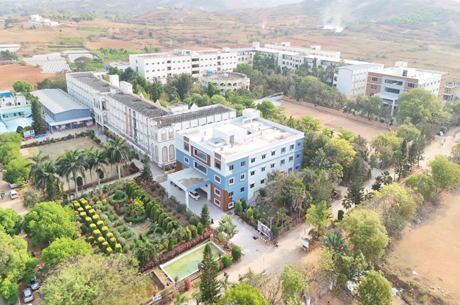
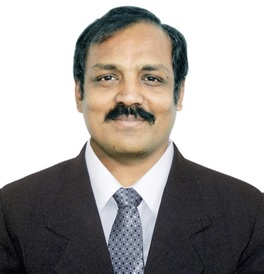

Madanapalle Institute of Technology & Science (MITS) was established in 1998 in the scenic and serene surroundings of Madanapalle. The institute is ideally situated on a spacious 26.17-acre campus in the Madanapalle–Anantapur Highway (NH-42), near Angallu, approximately 10 km from Madanapalle.
MITS was founded under the Ratakonda Ranga Reddy Educational Academy, under the leadership of Late Sri N. Krishna Kumar, M.S. (U.S.A.), the then President, and Dr. N. Vijaya Bhaskar Choudary, Ph.D. the visionary leader of the Academy.
With 27 years of academic excellence, MITS has earned NAAC A+ accreditation and NBA recognition for its programs. In recognition of its quality standards and contributions to higher education, the Government of India has conferred MITS the status of a Deemed to be University under Section 3 of the UGC Act, 1956. vide Notification No. 9-1/2025-U.3(A) dated 15th July, 2025.
MITS - Deemed to be University is now governed by the visionary and proactive leadership of Dr. N. Vijaya Bhaskar Choudary, the founder and Chancellor. Redefining the education in the international standard, MITS Deemed to be University, now continues to strive with a total commitment and dedication to establish the institution as one of the foremost centers of academic excellence in India. With well-defined strategies and action plans that align with the evolving needs of the globe, MITS Deemed to be University has set forth its educational Odyssey.

Principal's Message:

Dr. P. Ramanathan
B.E., M.E., Ph.D.
Principal
Dear Students,
Welcome to MITS College of Engineering.
Our college provides an excellent learning environment with
experienced faculty, modern laboratories, digital classrooms,
and strong placement support.
We encourage every student to improve technical skills,
communication skills, leadership qualities, and innovation.
I invite you to to become a part of our college family and take advantage of the opportunities available here.
I wish you all the very best for your bright future.
Thank You.
Latest News
Admissions Open
Admissions for the academic year 2026-2027 have started.
Students can apply online before 30th August.
Campus Placements
Top companies including TCS, Cognizant, Infosys,
Wipro, Accenture and Capgemini are visiting our campus.
College Highlights
NAAC Accredited
NAAC A+ Accredited Institution.
Experienced Faculty
More than 250 qualified faculty members.
Modern Laboratories
Well-equipped computer, ECE, mechanical and civil laboratories.
Library
Over 50,000 books and digital learning resources.
Placement Cell
95% placement record with multinational companies.